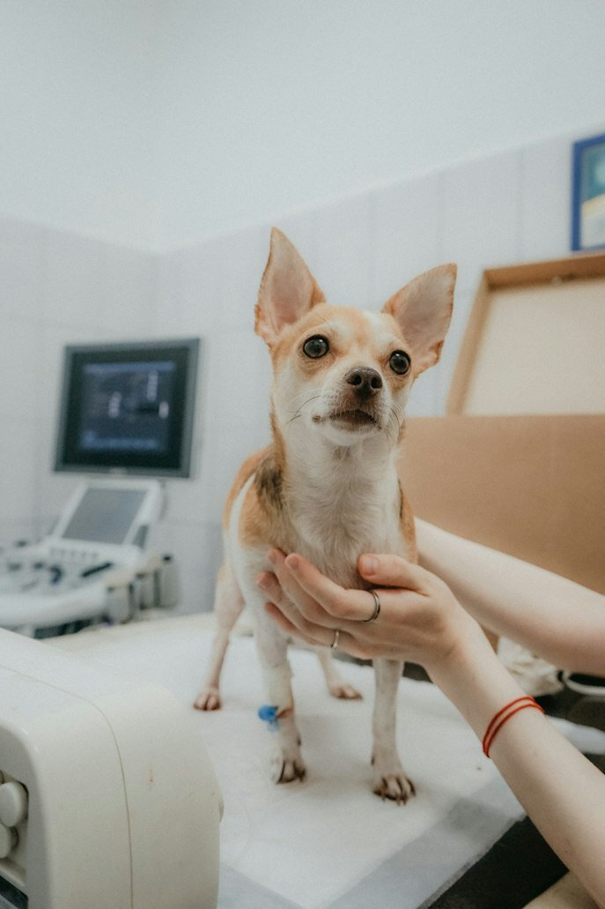
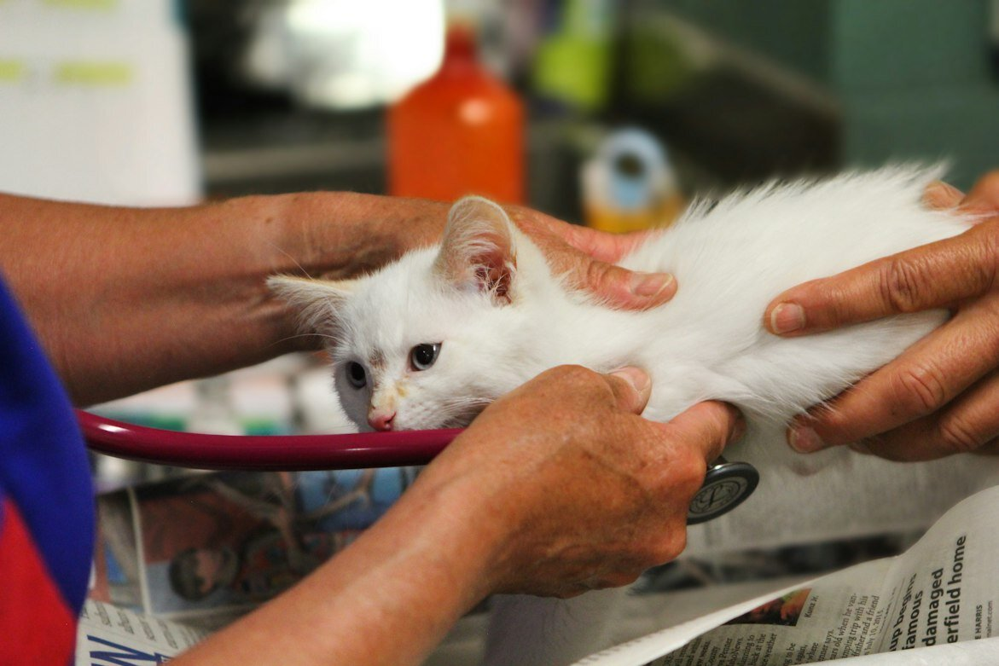
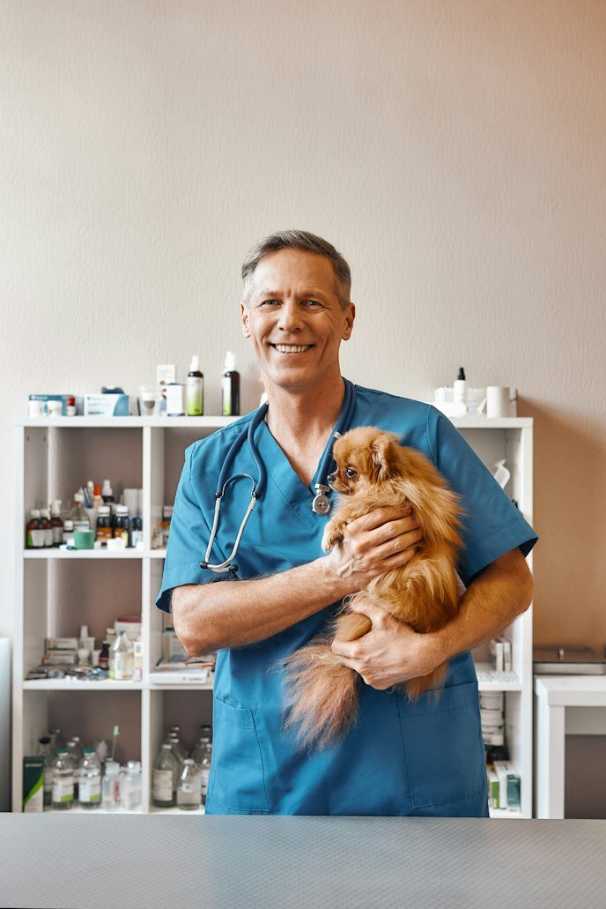
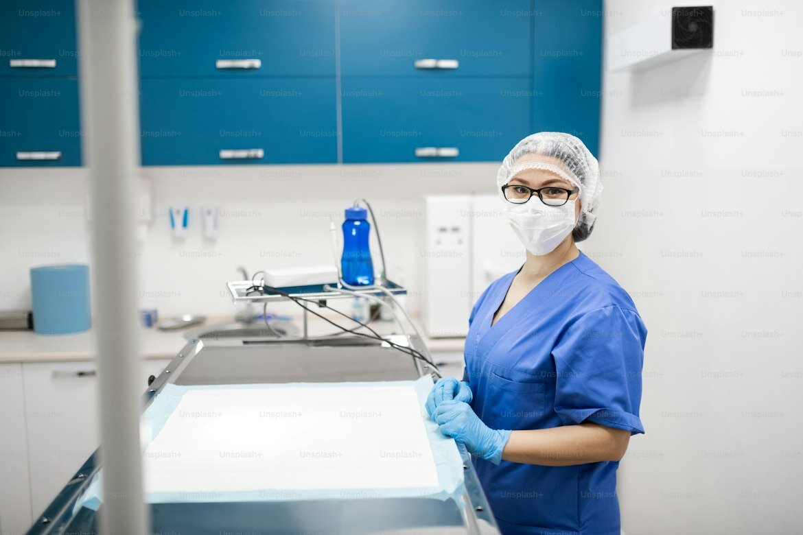

Clínica veterinaria en Palermo
Medicina basada en evidencia. Infraestructura de alta complejidad.
No dejamos nada librado al azar. Centralizamos quirófano equipado, laboratorio in situ e imágenes médicas para dar diagnósticos precisos y resolver cirugías con seguridad.
Agendar consultaCirujanos y anestesistas matriculados

- 15 minResultados de hemograma y bioquímica, sin tercerizar la muestra
- 1 visitaConsulta, estudios y plan terapéutico en el mismo día
- 24 hDerivación a red de alta complejidad fuera de nuestro horario
Nuestras especialidades
Qué podemos resolver acá adentro
Capacidad instalada para ir desde un chequeo de rutina hasta una intervención traumatológica compleja, sin mover al paciente de edificio.
-
Cirugía y anestesiología
Tejidos blandos y traumatología, con anestesia inhalatoria, monitoreo multiparamétrico y respirador artificial.
- Riesgo quirúrgico previo
- obligatorio
- Anestesista
- exclusivo
-
Laboratorio in situ
Hemograma y bioquímica sanguínea con equipos propios. Los valores críticos no esperan a un correo del laboratorio externo.
- Resultados
- 15 min
- Derivación de muestras
- no
-
Espacio cat-friendly
Consultorio felino aislado acústicamente, con protocolos fear-free para bajar el estrés hospitalario.
- Sala de espera
- separada
- Protocolo
- fear-free
Horarios y urgencias
Cuándo estamos y qué hacer si no
El tiempo es un factor vital. Preferimos que sepas de antemano adónde ir a cualquier hora, antes que descubrirlo con el animal en brazos.
| Lunes a viernes | 9:00 a 20:00 |
|---|---|
| Sábado | 9:00 a 20:00 |
| Domingo y feriados | cerrado |
Llamá al 11 1234-5678 y te derivamos de inmediato a la red de alta complejidad con la que trabajamos. Tu historia clínica viaja con vos: la enviamos al centro de guardia antes de que llegues.
Infraestructura
Dónde se hace cada cosa
Un entorno clínico estéril, seguro y tecnológico, pensado para sostener la vida y recuperar la salud del animal.

Quirófanos e internación 
Diagnóstico por imágenes 
Laboratorio de análisis clínicos
Ubicación y contacto
Av. Santa Fe 3200, Palermo
Zona de acceso rápido, con dársena de detención para pacientes de urgencia.
Dirección
Av. Santa Fe 3200
Palermo, CABA (C1425)
Cómo llegar
Subte D, Bulnes o Agüero
Colectivos 12, 15, 29, 39, 64, 68, 152
Estacionamiento
Dársena de urgencias en la puerta
Convenio a 50 metros
Preguntas frecuentes
Lo que más nos consultan
¿Trabajan con prepagas veterinarias?
Somos prestadores directos de Osde Mascotas, Puppis Care y VetPlan. Para clientes particulares aceptamos efectivo, transferencia y tarjetas de crédito con cuotas fijas en cirugías programadas.
¿Cómo es el protocolo para cirugías?
Toda intervención lleva un riesgo quirúrgico previo: análisis de sangre y electrocardiograma. El día de la cirugía el paciente queda monitoreado por un anestesista exclusivo, separado del cirujano principal.
¿Qué pasa si mi animal se descompensa de madrugada?
Llamanos igual. El teléfono deriva a la red de guardia con la que trabajamos y te indicamos el centro más cercano. Enviamos la historia clínica para que no tengan que empezar de cero.